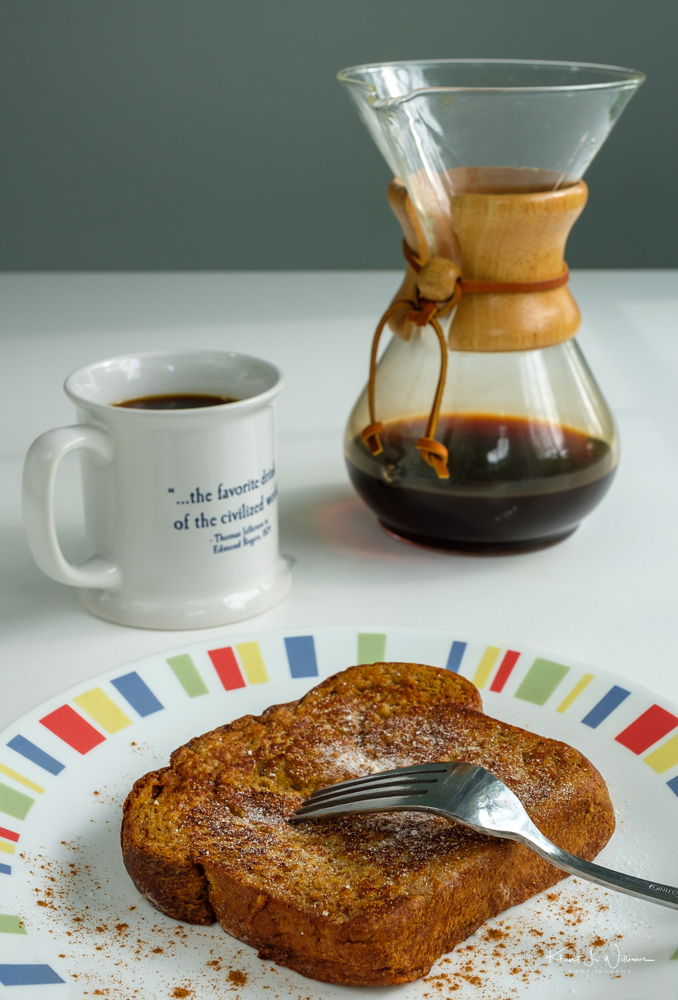

Home
French Toast

Description
French toast is a breakfast dish made by soaking slices of bread in a mixture of beaten eggs and milk or cream, then pan-frying them in butter until golden brown. It is typically served hot with sweet toppings like syrup, powdered sugar, and fruit, though it can be made savory.
Ingredients
- ¼ cup all-purpose flour
- 1 cup milk
- 3 large eggs
- 1 tablespoon white sugar
- 1 teaspoon vanilla extract
- ½ teaspoon ground cinnamon
- 1 pinch salt
- 12 (¾- to 1-inch thick) slices of bread
Steps
- Gather all ingredients.
- Place flour into a large mixing bowl; slowly whisk in milk until smooth. Whisk in eggs, sugar, vanilla, cinnamon, and salt until well combined.
- Heat a lightly oiled griddle or frying pan over medium heat. Meanwhile, soak bread slices in milk mixture until saturated.
- Working in batches, cook bread on the preheated griddle or pan until golden brown on both sides, about 2 minutes per side.
- Serve hot and enjoy.